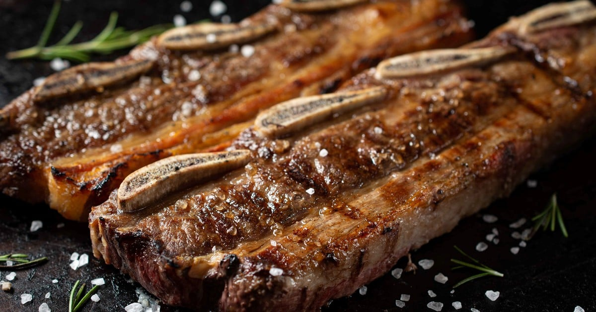

Argentine style barbecue

Description
Roast beef cooked on a grill, with sausages and roasted vegetables.
Ingredients
- 1kg of Beef.
- 2 pork sausages.
- 2 blood sausages.
- Potatoes, bell pepper and onion.
- Grill salt.
Steps
- Salt the meat.
- Put the meat on the bone or fat side.
- When the juice starts to come out of the meat, turn it over.
- Once you turned it, place the sausages on the grill.
- Add the vegetables to the grill.
Now enjoy an delicious Argentinian barbecue!